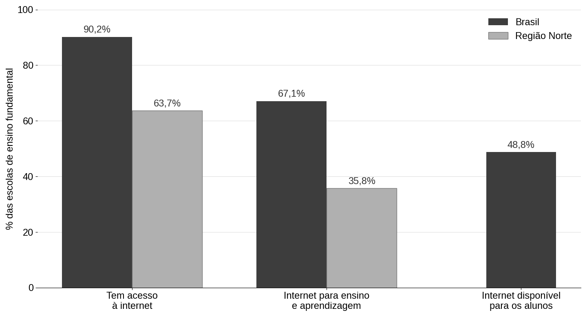
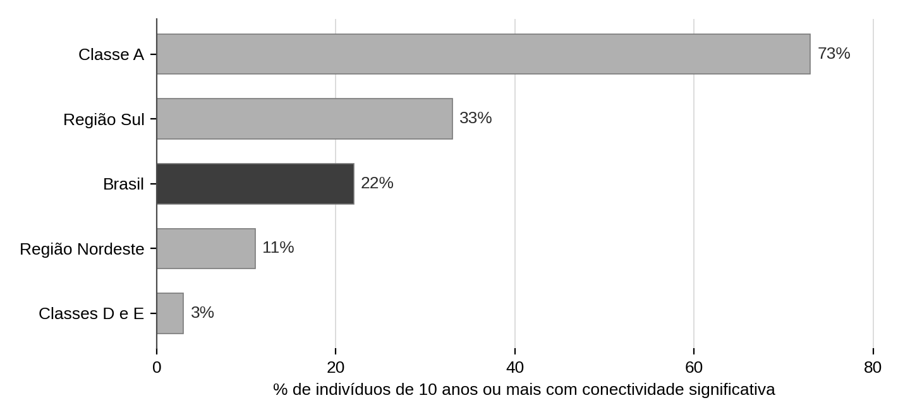
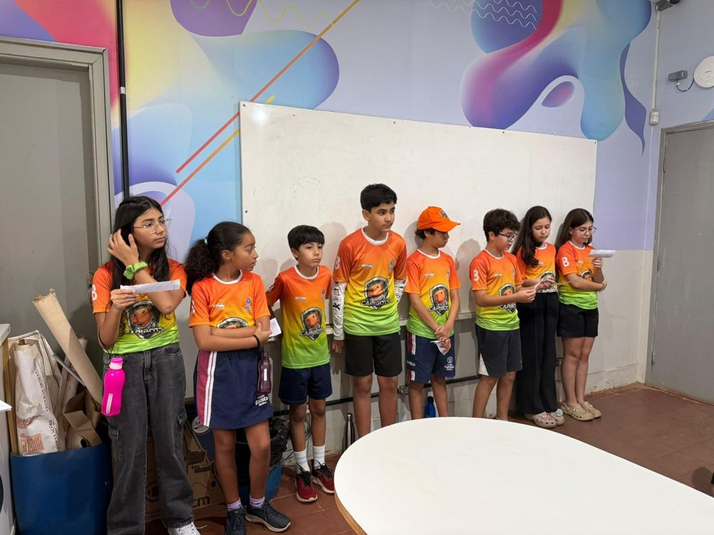
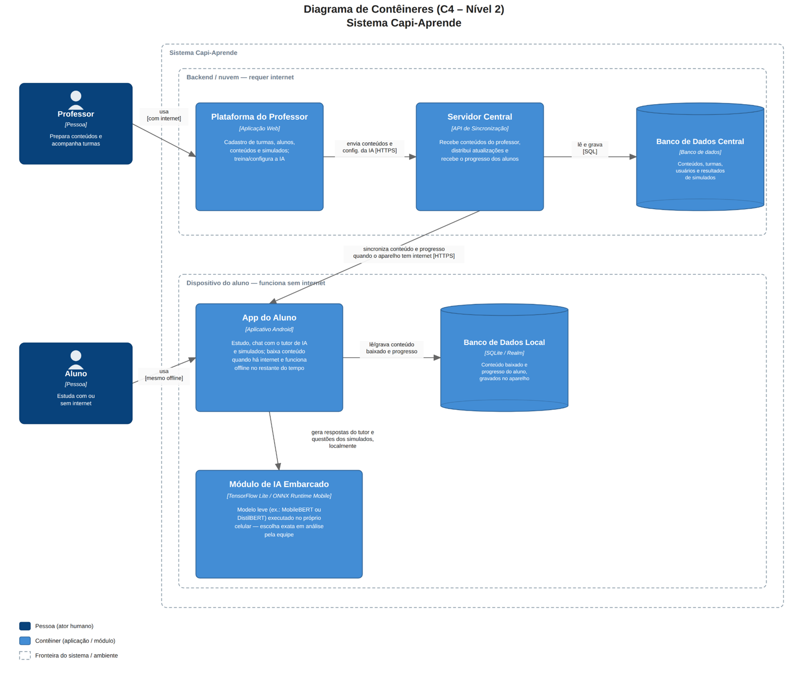
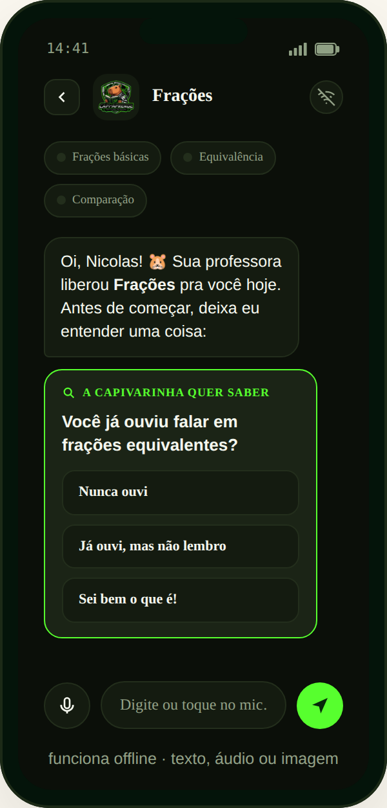
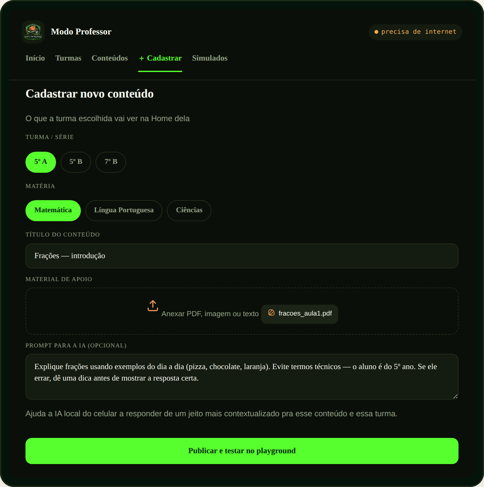
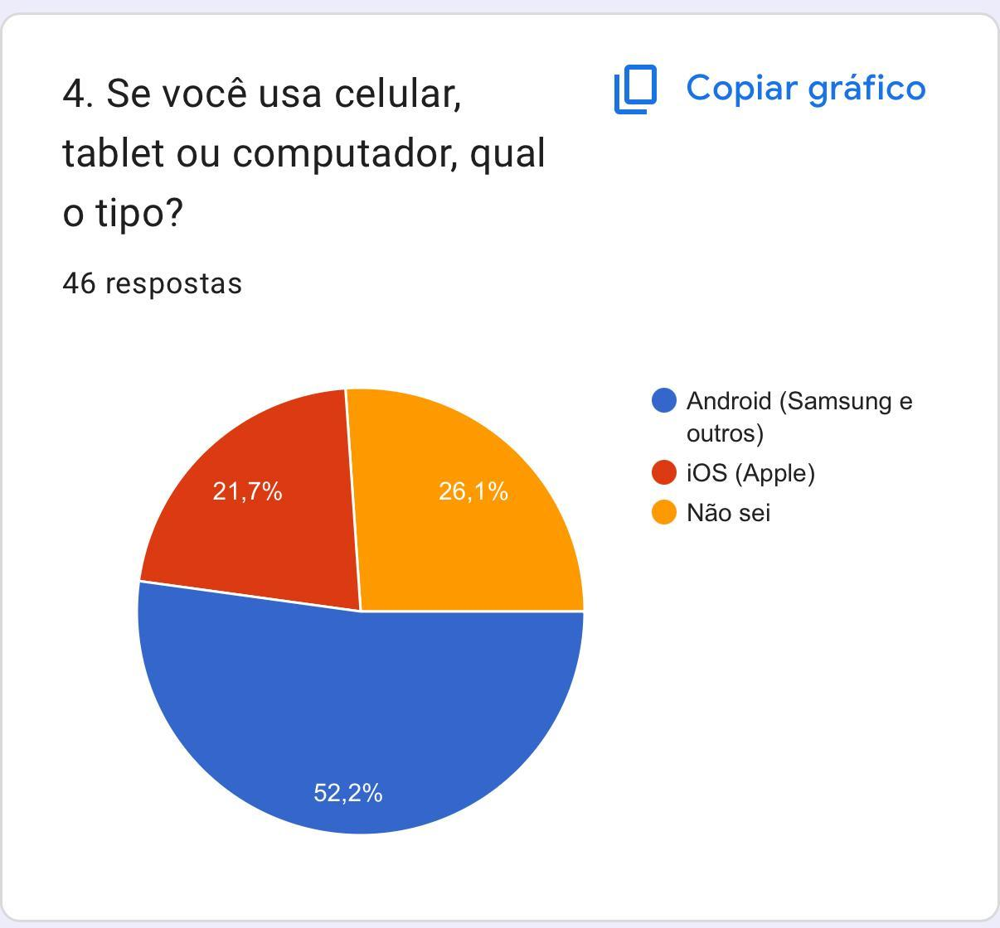

Resumo
Estudar passou a depender de uma conexão que não chega igualmente a todas as crianças. Alinhado ao ODS 4 da ONU, este trabalho investiga como a falta de conexão utilizável no momento do estudo, em casa ou na própria escola, afeta a aprendizagem no ensino fundamental, e avalia uma ferramenta que funcione sem rede. A equipe reuniu dados oficiais (Censo Escolar, TIC Domicílios, TIC Kids Online Brasil, TIC Educação e PISA), visitou uma escola rural de Uberlândia (MG) e comparou oito alternativas segundo quatro critérios antes de propor sua solução: o Capi-Aprende, aplicativo offline para celular, com conteúdo preparado pelo professor e um tutor de inteligência artificial embarcado, já disponível em protótipo navegável. No diagnóstico, 46 estudantes responderam ao questionário, 26 deles presencialmente na Escola Municipal Dom Bosco, com aplicação feita pelas próprias crianças da equipe. O resultado contrariou a expectativa inicial: quase todos têm internet em casa, mas o equipamento separa os grupos. Na escola rural, 15 de 26 não têm computador nem tablet, contra 1 de 20 nos demais, e os 9 estudantes que deixam de fazer lições com frequência estão todos nela. A próxima etapa testará o efeito do aplicativo sobre a aprendizagem, com pré-teste e pós-teste em três grupos.
Palavras-chave: conectividade; desigualdade digital; tutor de inteligência artificial; tecnologia educacional offline.
1Introdução e definição do problema
Noventa e dois por cento das crianças e adolescentes brasileiros de 9 a 17 anos usam internet (CGI.BR, 2025a). Isolado, o número sugere um problema resolvido. Mas, quando se pergunta se esse acesso serve para estudar, o quadro muda: pelo indicador de conectividade significativa do Cetic.br, apenas 22% dos brasileiros de 10 anos ou mais alcançam essa condição, fatia que cai para 3% nas classes D e E (CGI.BR, 2024b). A escola tampouco cobre a diferença: 90,2% das escolas de ensino fundamental têm internet, mas somente 48,8% a disponibilizam aos alunos (INEP, 2025). O critério que define o problema investigado é, portanto, a ausência de conexão utilizável no momento do estudo, seja em casa, no trajeto ou na própria escola.
1.1 Como a equipe chegou ao problema
A partir do tema da temporada e da Meta 4.1 da ONU (ONU, 2015), cada integrante pesquisou individualmente e trouxe ideias, que somaram 11 frentes possíveis, de evasão escolar a lacunas no ensino de tecnologia. A equipe votou os quatro temas de maior interesse e se dividiu em grupos, que aprofundaram cada um com a ficha de pesquisa "Missão Capi investigadores" (Quadro 1).
| Grupo | Tema | Principal descoberta | Contribuição para a solução |
|---|---|---|---|
| 1 · Arthur e Nicolas | Acesso físico às escolas | Trajetos longos (até 4 h em casos extremos) levam a cansaço, faltas e evasão | Para muitas crianças, o estudo possível é o que acontece fora da escola |
| 2 · Lucca e Augusto | Ensino de tecnologia | Computação é obrigatória desde 2022, mas falta formação docente e equipamento | A ferramenta precisa ensinar, não só dar acesso, e com uso seguro |
| 3 · João Gomes, Gabriela e Manuela | Conectividade das escolas | Internet boa exige velocidade, estabilidade e equipamento ao mesmo tempo | A "biblioteca offline", levada do servidor da escola para o celular |
| 4 · Sophia e Luísa | Metacognição | Cada criança aprende de um jeito; muitas acham que "não são boas" em uma matéria | Um tutor que se adapta à forma de aprender de cada criança |
Fonte: elaborado pelos autores (2026).
Na discussão final, a equipe conferiu nas fontes originais os números levantados pelos grupos. Alguns se confirmaram, como a defasagem na formação docente (em 2024, 54% dos professores fizeram formação em tecnologias digitais; CGI.BR, 2025b) e o tempo excessivo de transporte escolar rural (MARTINS, 2010). Outros foram corrigidos. O número de 4,8 milhões de crianças em domicílios sem internet, por exemplo, vinha de uma pesquisa de 2019, anterior à pandemia; em 2024, as crianças que não acessam a rede eram cerca de 2 milhões (CGI.BR, 2024a). A desigualdade não desapareceu, deslocou-se do acesso para a qualidade do acesso. Por isso o problema foi formulado em termos de internet de qualidade.
Os quatro caminhos terminavam no mesmo ponto: a criança que não consegue estudar fora da sala de aula. Daí veio a pergunta formulada pelos próprios integrantes: como ajudar as crianças a continuar estudando quando estão em casa e não têm internet?
1.2 Problema de pesquisa
1.3 Hipóteses
- Principal: se crianças sem internet de qualidade no momento de estudar usarem uma ferramenta educacional offline no celular, então conseguirão manter a rotina de estudo e melhorar seu desempenho, porque software educacional estruturado e adaptativo produz ganhos de aprendizagem, muitas vezes maiores entre os alunos mais defasados (MURALIDHARAN; SINGH; GANIMIAN, 2019; KULIK; FLETCHER, 2016).
- Secundária: se a ferramenta oferecer orientação pedagógica, e não apenas acesso ao conteúdo, o ganho será maior, porque acesso sem pedagogia não melhora resultados (OCDE, 2015; CRISTIA et al., 2017), enquanto o uso com propósito melhora (VANLEHN, 2011).
1.4 Objetivos
Geral: analisar como a falta de internet de qualidade no momento de estudar afeta a aprendizagem de crianças do ensino fundamental e avaliar o potencial de uma ferramenta educacional offline como apoio ao estudo.
Específicos:
- caracterizar a desigualdade de acesso à internet entre as crianças das escolas participantes, em Uberlândia (MG);
- identificar causas e consequências da falta de conectividade no momento do estudo;
- comparar as soluções educacionais offline existentes e suas limitações;
- desenvolver um protótipo do aplicativo offline do aluno e da plataforma do professor;
- testar o efeito da ferramenta na rotina de estudo e no desempenho dos participantes;
- relacionar os resultados às hipóteses e à literatura.
1.5 Justificativa
A razão científica é um achado contraintuitivo: o acesso à tecnologia, sozinho, não melhora a aprendizagem. Os países que mais investiram em tecnologia educacional não tiveram ganho proporcional (OCDE, 2015), programas que só entregam equipamento têm efeito praticamente nulo (ESCUETA et al., 2017) e o One Laptop per Child não elevou notas nem no curto nem no longo prazo (CRISTIA et al., 2017). A razão social é que a desigualdade de conexão reproduz a desigualdade de oportunidades de aprender, sobretudo entre famílias de baixa renda e nas regiões Norte e Nordeste (CGI.BR, 2024b; INEP, 2025). O trabalho se relaciona às metas 4.1, 4.5 e 4.a do ODS 4 e, de forma complementar, à meta 4.4, de habilidades tecnológicas (ONU, 2015).
2Referencial teórico
2.1 Conectividade, desigualdade digital e a dimensão do problema
Neste trabalho, conectividade para fins educacionais envolve, ao mesmo tempo, velocidade suficiente, estabilidade e equipamento adequado. Quando esses elementos faltam para parte da população, surge a desigualdade digital; um caso particular é o homework gap, a defasagem das crianças que não conseguem estudar em casa por falta de internet ou de dispositivo (CROCKER; KLEITSCH, 2023). A UNESCO (2023) lembra que a tecnologia só contribui quando é relevante, equitativa e sustentável, como apoio ao ensino, e não como substituto.
No ensino fundamental, o acesso à internet cai de 90,2% no Brasil para 63,7% na região Norte, e a conexão é destinada ao ensino e à aprendizagem em 67,1% das escolas do país, contra 35,8% no Norte (INEP, 2025) (Figura 1). A combinação de internet e computadores para os alunos chegou, em 2025, a 73% das escolas urbanas e a apenas 41% das rurais (CGI.BR, 2026). Em casa, a conectividade significativa é de 11% no Nordeste, contra 33% no Sul e 73% na classe A (CGI.BR, 2024b) (Figura 2).

Fonte: elaborada pelos autores com base no Censo Escolar 2024 (INEP, 2025).

Fonte: elaborada pelos autores com base na TIC Domicílios 2024 (CGI.BR, 2024b).
2.2 Causas e consequências
As causas combinam distância das áreas rurais, custo de levar a rede, instabilidade de energia, falta de equipamentos e restrição do uso pedagógico da internet existente, somadas à formação docente insuficiente (INEP, 2025; CGI.BR, 2025b). As consequências aparecem num quadro já frágil: no PISA 2022, 73% dos estudantes brasileiros ficaram abaixo do nível 2 em matemática, contra 31% na média da OCDE (OCDE; INEP, 2023). Entre concluintes de baixa renda, ter internet e computador em casa esteve associado a até 23 pontos a mais no ENEM (RUBIM; MANTOVANI; ALAVARSE, 2025).
2.3 Soluções existentes e a lição "acesso não basta"
A Estratégia Nacional de Escolas Conectadas (ENEC) pretende conectar mais de 138 mil escolas públicas, com Wi-Fi em toda a unidade e ao menos 1 Mbps por aluno (BRASIL, 2023a, 2023b); em julho de 2026, 78,7% das escolas monitoradas tinham conectividade adequada (BRASIL, 2026a). Entre as ferramentas, Kolibri e RACHEL distribuem conteúdo offline a partir de um servidor local (LEARNING EQUALITY, 2024; WORLD POSSIBLE, 2024), o Mindspark ajusta exercícios ao nível do aluno (MURALIDHARAN; SINGH; GANIMIAN, 2019), o Arapai roda modelos de linguagem em computadores simples (WALUSIMBI et al., 2026) e o AIED Unplugged, adotado em mais de 8 mil escolas brasileiras, apoia o professor na avaliação de redações sem aumentar a desigualdade entre rural e urbano (PORTELA et al., 2025).
Essas soluções têm limites comuns: atuam no prédio da escola, exigem servidor e Wi-Fi local ou são usadas pelo professor, não pela criança. Não foi encontrado estudo que mostre se um tutor conversacional offline melhora a aprendizagem de crianças brasileiras. É essa a lacuna do trabalho. A escolha do celular se apoia nos dados: 96% dos usuários de 9 a 17 anos o utilizam e, nas classes D e E, 82% acessam a rede apenas por ele; mas só 55% das crianças de 9 a 10 anos têm aparelho próprio (CGI.BR, 2025a), o que exige pensar também no uso compartilhado. A solução não substitui a infraestrutura: as duas frentes são complementares.
2.4 Fundamentos científicos da solução
Três conjuntos de evidências decidiram partes do Capi-Aprende. Sistemas tutores inteligentes ensinam quase tão bem quanto um professor particular (VANLEHN, 2011; KULIK; FLETCHER, 2016; MA et al., 2014), por isso a equipe construiu um tutor, e não um repositório. Um tutor de IA superou a aula ativa presencial em um ensaio controlado (KESTIN et al., 2025), e o retorno gerado por IA melhora resultados (HUANG et al., 2026), por isso o tutor conversa e parte do que a criança já demonstrou saber. O software adaptativo traz ganho maior aos mais atrasados (MURALIDHARAN; SINGH; GANIMIAN, 2019), por isso há simulados que medem o nível antes da explicação. Nos três casos, o ganho vem do método pedagógico, não do aparelho.
3Metodologia
A pesquisa é aplicada, de caráter exploratório e explicativo, e combina abordagens bibliográfica, documental, de campo e experimental. A primeira etapa (concluída) reuniu dados oficiais, a visita à escola e o questionário com estudantes; a segunda (a realizar) aplicará pré-teste e pós-teste de matemática, além de entrevistas curtas.
3.1 Pesquisa bibliográfica e documental
As buscas ocorreram entre março e setembro de 2026 no Google Acadêmico, SciELO, Portal de Periódicos da CAPES e arXiv, com termos em português e inglês ("desigualdade digital", "tutor inteligente", homework gap, offline AI tutor). Os dados oficiais vieram diretamente do Cetic.br, INEP, MEC e Ministério das Comunicações e foram separados por região, classe, área e rede sempre que possível: Censo Escolar 2024, TIC Domicílios 2024, TIC Kids Online (2019, 2024 e 2025), TIC Educação (2024 e 2025), PISA 2022 e o indicador de Escolas Conectadas.
3.2 Pesquisa de campo
Em 20 de agosto de 2026, a mentora e dois pais da equipe visitaram a Escola Municipal Dom Bosco, na zona rural de Uberlândia (cerca de 350 alunos, da educação infantil ao 9º ano), para confrontar o problema com a realidade e pedir autorização para a etapa com as crianças. A entrevista seguiu um roteiro semiestruturado de 24 perguntas em cinco blocos. Os principais achados:
- a escola tem internet, mas instável, com quedas de energia de até um turno, e a rede é exclusiva de professores e administração;
- há um único laboratório; os tablets da pandemia estão em boa parte defasados ou danificados; não existe aplicativo de apoio à aprendizagem;
- há crianças de 5º ano ainda não plenamente alfabetizadas, e matemática é o maior gargalo; muitos usam o celular do pai, quando emprestado;
- a turma com monitoria no contraturno tem desempenho melhor, segundo a analista pedagógica (relato sem dados, com turmas de tamanhos diferentes);
- no período integral quase não há estudo domiciliar: o critério do problema passa a ser a falta de conexão no momento do estudo, e não o local.
Em 7 de outubro de 2026, as crianças da equipe apresentaram o projeto aos estudantes da Dom Bosco e aplicaram o questionário ilustrado impresso (Figura 3), lido em voz alta e com cartões de apoio para quem ainda tem dificuldade de leitura. A versão online foi enviada à Escola Municipal Professora Neuza Rezende e às turmas de 5º ano do Colégio Batista Mineiro e divulgada no Instagram da equipe. Os cuidados éticos incluíram autorização da direção, consentimento das famílias e da criança, nenhum dado pessoal e identificação apenas por código. A análise só começou depois de encerrada a coleta.
3.3 Amostra
A amostra, por conveniência, reuniu 46 estudantes: 26 da Dom Bosco (questionário impresso, turmas do 3º ao 6º ano do período integral) e 20 pelo formulário online. No conjunto, 56,5% estavam no 5º ou 6º ano, 71,7% tinham 10 ou 11 anos, 58,7% estudavam em escola pública e 41,3% em particular.

Fonte: acervo dos autores (2026).
3.4 Desenho do experimento (próxima etapa)
O experimento terá pré-teste e pós-teste em três grupos, com o mesmo tema de matemática, a mesma lista de exercícios e o mesmo número de sessões. Só muda o apoio disponível (Quadro 2). As crianças serão ordenadas pela nota do pré-teste, agrupadas em blocos de três e sorteadas para os grupos; os testes serão feitos sem o aplicativo, com questões equivalentes e não idênticas, e corrigidos às cegas. Público, número de sessões e formato ainda dependem das escolas parceiras.
| Grupo | Apoio ao estudo | Comparação |
|---|---|---|
| Controle | Apenas o material da escola | Controle × Capi-Aprende completo: hipótese principal |
| Conteúdo offline | Conteúdo no celular, sem o tutor | Conteúdo × Capi-Aprende completo: hipótese secundária (efeito da orientação) |
| Capi-Aprende completo | Conteúdo + tutor de IA embarcado | Grupo de referência das duas comparações |
Fonte: elaborado pelos autores (2026).
Antes do experimento, o aplicativo será testado em modo avião em aparelhos de capacidades diferentes (tempo de resposta, memória, bateria e entrada por voz) e com duas ou três crianças, para ajustar linguagem e navegação. Durante as sessões, o aplicativo registrará o tempo de uso e o tipo de pergunta feita ao tutor: pedir a resposta ou pedir explicação. O indicador principal é a diferença de acertos entre pré-teste e pós-teste, ao lado do engajamento. Como a amostra é por conveniência, os resultados serão lidos como indícios, e não como prova.
4Desenvolvimento do protótipo Capi-Aprende
Antes de propor sua solução, a equipe comparou oito alternativas segundo quatro critérios: alcançar a criança sem conexão, ensinar (e não só dar acesso), ser viável para a equipe nesta temporada e ter evidência de efeito (Quadro 3).
| Alternativa | Alcança sem conexão | Ensina | Viável | Evidência |
|---|---|---|---|---|
| Ampliar conexão da escola (ENEC, Wi-Fi Brasil) | Não | Não | Não | Sem efeito medido em aprendizagem |
| Distribuir equipamentos (OLPC) | Parcial | Não | Não | Sem ganho de notas (CRISTIA et al., 2017) |
| Plataforma em servidor local (Kolibri, RACHEL) | Parcial | Parcial | Sim | Uso consolidado, sem ganho isolado |
| Software adaptativo (Mindspark) | Não | Sim | Não | +0,37 DP em matemática |
| Tutor de IA em computador (Arapai) | Parcial | Sim | Parcial | Sem resultado de aprendizagem publicado |
| IA de apoio ao professor (AIED Unplugged) | Não | Sim | Parcial | Equidade rural/urbano |
| App offline só com conteúdo | Sim | Não | Sim | Acesso sem pedagogia não melhora |
| App offline com tutor embarcado (adotada) | Sim | Sim | Sim | Tutores: efeito moderado a alto |
Fonte: elaborado pelos autores (2026), a partir do Quadro 2 da versão integral.
As alternativas que ensinam precisam de computador, servidor ou professor; as que chegam ao aluno não ensinam. Restaram as duas que funcionam no celular, e o critério de ensinar decidiu entre elas. O sistema tem duas partes: uma plataforma do professor, usada com internet, onde o docente cadastra e contextualiza os conteúdos; e um aplicativo do aluno, que funciona offline, com leitura, atividades, jogos e o tutor de IA, sincronizando o progresso quando volta a ter conexão.
Tecnicamente, prevê-se um modelo de linguagem leve executado no próprio celular, como o Gemma 3 1B ou o Gemma 4 E2B (GOOGLE DEEPMIND, [s. d.]), por meio da MediaPipe LLM Inference API e do LiteRT-LM (GOOGLE, [s. d.]), com banco local SQLite/Room e servidor central para sincronização (Figura 4). A escolha final depende de testes de desempenho e memória.

Fonte: elaborado pelos autores (2026).
Como primeira etapa, a equipe construiu um protótipo navegável do aplicativo do aluno e da plataforma do professor, aberto em capiaprende.capibots.com.br (Figura 5). Ele permite testar telas e fluxos antes da integração dos modelos de IA embarcados.

(a) Tutor "Capivarinha", com entrada por voz e cartões de pergunta
(b) Cadastro de conteúdo na plataforma do professorFonte: elaborado pelos autores (2026).
4.1 Condicionantes vindas do campo
As duas idas à Dom Bosco geraram quatro ajustes já incorporados ao protótipo:
- Alfabetização: há crianças de 5º ano não plenamente alfabetizadas, por isso o tutor oferece entrada por voz e perguntas curtas em cartões. Ficam para a próxima versão o reconhecimento de fala embarcado e ilustrações nos cartões.
- Acesso ao aparelho: 17 dos 46 participantes não têm celular próprio (12 usam o de alguém da família e 5 não usam celular). O app foi desenhado para sessões curtas em aparelho compartilhado, com login da escola e progresso guardado por aluno. Quem não tem aparelho usará o app no apoio pedagógico, o que depende de a escola ter algum equipamento em uso.
- Plataforma: 52,2% usam Android, 21,7% iOS e 26,1% não souberam informar (Figura 6). O desenvolvimento começa pelo Android, que predomina entre aparelhos de menor custo e permite instalação local. O alto índice de "não sei" mostra que muitos usam o aparelho sem controlá-lo: a instalação deve ser acompanhada por um adulto.
- Carga do conteúdo: a primeira carga ocorre pelo Wi-Fi da escola, em horário combinado com o professor. Como na Dom Bosco a rede ainda é restrita a professores e administração, enquanto não houver essa liberação pontual o professor transfere o conteúdo por conexão local em sala.

Fonte: elaborado pelos autores (2026).
5Resultados do diagnóstico
Os resultados são apresentados por grupo, porque a média única esconderia a diferença entre os contextos. A Tabela 1 compara a Dom Bosco com os demais participantes nos indicadores em que a diferença foi maior.
| Indicador | Dom Bosco (n = 26) | Demais (n = 20) | Total (n = 46) |
|---|---|---|---|
| Tem internet Wi-Fi em casa | 25 (96,2%) | 20 (100%) | 45 (97,8%) |
| Não tem computador nem tablet em casa | 15 (57,7%) | 1 (5,0%) | 16 (34,8%) |
| Deixou de fazer lição "várias vezes" ou "quase sempre" por falta de internet ou aparelho | 9 (34,6%) | 0 (0%) | 9 (19,6%) |
| Já conversou com um assistente de IA | 21 (80,8%) | 19 (95,0%) | 40 (87,0%) |
Fonte: elaborado pelos autores (2026), com base nos questionários aplicados.
A internet em casa é quase universal nesta amostra. 97,8% têm Wi-Fi e 80,4% dizem que a conexão sempre funciona quando precisam estudar. Pelos critérios definidos no método, a proporção sem conexão utilizável fica entre 2,2% (critério restrito) e 19,6% (critério ampliado). O resultado não confirma a ideia inicial de que a maior parte das crianças não tem internet em casa.
A diferença está no aparelho. Dos 16 participantes sem computador nem tablet, 15 são da Dom Bosco. No total, 37,0% não têm celular próprio. E todos os 9 que deixam de fazer lições com frequência estudam na escola rural; nessas situações, a reação mais comum é pedir ajuda a alguém (60,9%). Na Dom Bosco, metade dos estudantes (13 de 26) indicou a casa como principal lugar de estudo, mesmo estando no período integral, o que relativiza a restrição apontada na visita.
As crianças pedem alguém que explique. Quando não entendem a lição, 56,5% perguntam a alguém de casa; matemática é a matéria mais difícil para 50,0%. Para o "professor de bolso", as funções mais escolhidas foram tirar dúvidas de lição (71,7%) e explicar a matemática (52,2%). O uso de IA foi maior que o esperado (87,0%), em contraste com o relato da escola; a pergunta, porém, não separa o uso feito sozinho do feito com um adulto. Na pergunta aberta, algumas crianças descreveram com as próprias palavras a ideia de um tutor, como "um professor que eu podia chamar em qualquer horário".
Em relação às hipóteses, a falta de internet em casa é rara nesta amostra, mas a falta de aparelho adequado e a dependência da família são frequentes, sobretudo na escola rural. A procura por quem tire dúvidas e explique a matemática reforça a escolha de um tutor, e não de um repositório, o que dialoga com a hipótese secundária.
6Recursos, cronograma e divulgação
Os recursos são modestos: mentoria voluntária, equipamentos próprios, cerca de R$ 80,00 em material e impressão, R$ 40,00/ano de domínio e hospedagem e R$ 220,00 de assinatura de ferramenta de IA para desenvolver o protótipo.
| Período | Atividades | Situação |
|---|---|---|
| Mar–Abr | Definição do tema e do problema | Concluído |
| Mar–Set | Pesquisa bibliográfica e documental; redação do referencial | Concluído |
| Ago | Visita exploratória à Escola Municipal Dom Bosco | Concluído |
| Set–Out | Protótipo navegável; questionário online e presencial; análise do diagnóstico | Concluído |
| Nov | Entrevistas curtas e pré-teste; apresentação na Feira Ciência Viva (UFU) | Previsto |
| Dez | Uso do aplicativo e pós-teste; análise final | Previsto |
Fonte: elaborado pelos autores (2026).
A divulgação foi tratada como parte do método. Cada marco foi apresentado a um público externo antes da conclusão do estudo (Quadro 5).
| Data | O que foi divulgado | Onde |
|---|---|---|
| 09/05/2026 | Tema escolhido para a temporada | Site capibots.com.br |
| 23/05/2026 | Artigo sobre conectividade das escolas brasileiras | Site capibots.com.br |
| 20/08/2026 | Problema e proposta de solução | Escola Municipal Dom Bosco |
| 02–05/10/2026 | Convite para o questionário online | Escolas parceiras e Instagram |
| 07/10/2026 | Apresentação do projeto e aplicação do questionário | Escola Municipal Dom Bosco |
| 15/10/2026 | Protótipo navegável aberto ao público | capiaprende.capibots.com.br |
| 15/10/2026 | Trabalho selecionado e publicado (cód. 149) | 31ª Feira Ciência Viva – Museu Dica/UFU |
Fonte: elaborado pela equipe (2026).
7Considerações parciais
Até a etapa Regional, a equipe definiu o problema por um processo coletivo e pela checagem dos dados oficiais, construiu o referencial, visitou a escola rural, elaborou os instrumentos, concluiu o diagnóstico com 46 estudantes e desenvolveu o protótipo navegável do Capi-Aprende. O achado central inverteu a expectativa: nesta amostra, quase todas as crianças têm internet em casa, mas na escola rural falta equipamento e são mais frequentes as lições que ficam sem fazer. As crianças pedem, sobretudo, alguém que tire dúvidas e explique matemática.
Os próximos passos são as entrevistas curtas e o experimento com pré-teste e pós-teste em três grupos, que dirão se as hipóteses se confirmam. O trabalho será apresentado de 16 a 20 de novembro na 31ª Feira Ciência Viva, cujo tema é "Ciência Delas", por Gabriela Neri Sticca, Luísa Carvalho de Oliveira e Sophia Arantes Borges.
Referências
BRASIL. Decreto nº 11.713, de 26 de setembro de 2023. Institui a Estratégia Nacional de Escolas Conectadas. Brasília, DF: Presidência da República, 2023a.
BRASIL. Ministério das Comunicações. Governo Federal lança Estratégia Nacional de Escolas Conectadas para levar internet a mais de 138 mil instituições até 2026. Brasília, DF: MCom, 26 set. 2023b. Disponível em: https://www.gov.br/mcom. Acesso em: 29 set. 2026.
BRASIL. Ministério da Educação. Painel do MEC mostra dados de conectividade de 138 mil escolas públicas. Agência Gov, Brasília, set. 2026a. Disponível em: https://agenciagov.ebc.com.br. Acesso em: 29 set. 2026.
COMITÊ GESTOR DA INTERNET NO BRASIL (CGI.br). TIC Kids Online Brasil 2024. São Paulo: NIC.br, 2024a. Disponível em: https://cetic.br/pt/pesquisa/kids-online/. Acesso em: 29 set. 2026.
COMITÊ GESTOR DA INTERNET NO BRASIL (CGI.br). TIC Domicílios 2024. São Paulo: NIC.br, 2024b. Disponível em: https://cetic.br/pt/pesquisa/domicilios/. Acesso em: 29 set. 2026.
COMITÊ GESTOR DA INTERNET NO BRASIL (CGI.br). TIC Kids Online Brasil 2025. São Paulo: NIC.br, 2025a. Disponível em: https://cetic.br/pt/pesquisa/kids-online/. Acesso em: 29 set. 2026.
COMITÊ GESTOR DA INTERNET NO BRASIL (CGI.br). TIC Educação 2024. São Paulo: NIC.br, 2025b. Disponível em: https://cetic.br/pt/pesquisa/educacao/. Acesso em: 29 set. 2026.
COMITÊ GESTOR DA INTERNET NO BRASIL (CGI.br). TIC Educação 2025. São Paulo: NIC.br, 2026. Disponível em: https://cetic.br/pt/pesquisa/educacao/. Acesso em: 29 set. 2026.
CRISTIA, J. et al. Technology and child development: evidence from the One Laptop per Child program. American Economic Journal: Applied Economics, v. 9, n. 3, p. 295-320, 2017.
CROCKER, T.; KLEITSCH, D. The "homework gap" and academic achievement in high school science. National Youth Advocacy and Resilience Journal, v. 6, n. 1, p. 1-31, 2023.
ESCUETA, M. et al. Education technology: an evidence-based review. Cambridge: NBER, 2017. (NBER Working Paper, n. 23744).
GOOGLE DEEPMIND. Gemma. Disponível em: https://deepmind.google/models/gemma/. Acesso em: 17 ago. 2026.
GOOGLE. LLM Inference API e LiteRT-LM overview. Disponível em: https://developers.google.com/edge. Acesso em: 17 ago. 2026.
HUANG, Y. et al. Can generative AI feedback effectively enhance learning outcomes? A meta-analysis of 36 experimental and quasi-experimental studies. Education Sciences, v. 16, n. 6, art. 816, 2026.
INSTITUTO NACIONAL DE ESTUDOS E PESQUISAS EDUCACIONAIS ANÍSIO TEIXEIRA (INEP). Censo Escolar da Educação Básica 2024: notas estatísticas. Brasília, DF: INEP/MEC, 2025.
KESTIN, G. et al. AI tutoring outperforms in-class active learning: an RCT in an authentic educational setting. Scientific Reports, 2025.
KULIK, J. A.; FLETCHER, J. D. Effectiveness of intelligent tutoring systems: a meta-analytic review. Review of Educational Research, v. 86, n. 1, p. 42-78, 2016.
LEARNING EQUALITY. Kolibri: an offline-first learning platform. [S. l.]: Learning Equality, 2024. Disponível em: https://learningequality.org/kolibri/. Acesso em: 29 set. 2026.
MA, W. et al. Intelligent tutoring systems and learning outcomes: a meta-analysis. Journal of Educational Psychology, v. 106, n. 4, p. 901-918, 2014.
MARTINS, A. P. A. Análise dos impactos das condições do transporte escolar rural no rendimento escolar dos alunos. 2010. Dissertação (Mestrado em Transportes) – Universidade de Brasília, Brasília, 2010.
MURALIDHARAN, K.; SINGH, A.; GANIMIAN, A. J. Disrupting education? Experimental evidence on technology-aided instruction in India. American Economic Review, v. 109, n. 4, p. 1426-1460, 2019.
ORGANIZAÇÃO DAS NAÇÕES UNIDAS (ONU). Transformando nosso mundo: a Agenda 2030 para o Desenvolvimento Sustentável. [S. l.]: ONU, 2015.
ORGANIZAÇÃO PARA A COOPERAÇÃO E DESENVOLVIMENTO ECONÔMICO (OCDE). Students, computers and learning: making the connection. Paris: OECD Publishing, 2015.
ORGANIZAÇÃO PARA A COOPERAÇÃO E DESENVOLVIMENTO ECONÔMICO (OCDE); INEP. Resultados do PISA 2022: Brasil. Brasília, DF: INEP/MEC, 2023.
PORTELA, C. et al. AI in education unplugged support equity between rural and urban areas in Brazil. In: INTERNATIONAL CONFERENCE ON INFORMATION AND COMMUNICATION TECHNOLOGIES AND DEVELOPMENT, 13., 2024. Proceedings [...]. New York: ACM, 2025.
RUBIM, J. A. O.; MANTOVANI, D.; ALAVARSE, O. M. Exclusão digital e seus impactos sobre a proficiência no ENEM. Educação em Revista, v. 41, e59221, 2025.
UNESCO. Global Education Monitoring Report 2023: technology in education: a tool on whose terms? Paris: UNESCO, 2023.
VANLEHN, K. The relative effectiveness of human tutoring, intelligent tutoring systems, and other tutoring systems. Educational Psychologist, v. 46, n. 4, p. 197-221, 2011.
WALUSIMBI, J. et al. Arapai: an offline-first LLM architecture for adaptive learning in low-connectivity environments. [S. l.]: arXiv, 2026. Preprint arXiv:2603.03339.
WORLD POSSIBLE. RACHEL: Remote Area Community Hotspot for Education and Learning. [S. l.]: World Possible, 2024. Disponível em: https://rachel.worldpossible.org/. Acesso em: 29 set. 2026.